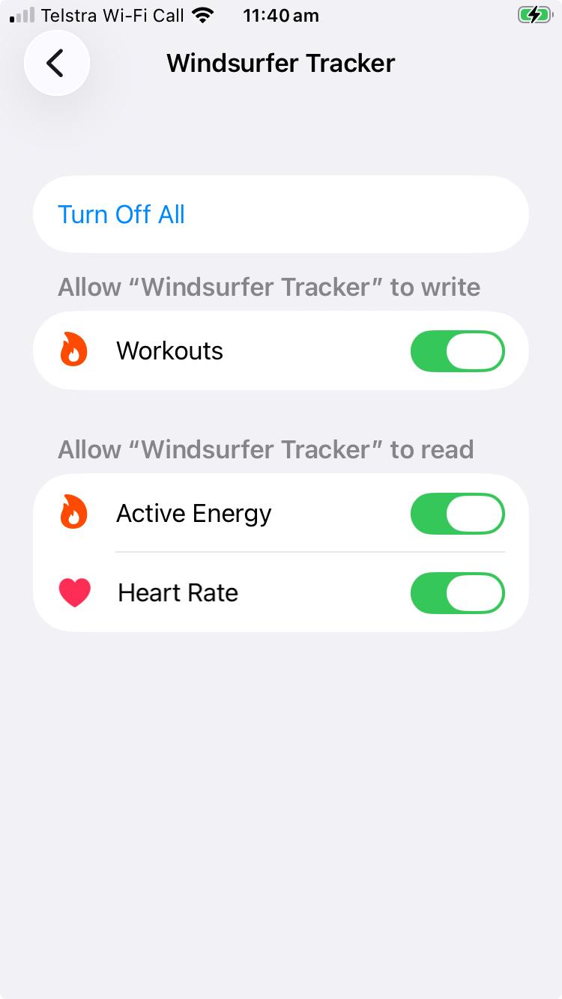

← Back to Installation Options
Apple Watch Installation
Follow these steps to install the Windsurfer Tracker app on your Apple Watch. The watch app is installed via TestFlight through your paired iPhone.
Requirements:
- Apple Watch Series 3 or newer (watchOS 8.0+)
- iPhone paired with your Apple Watch
- TestFlight app installed on your iPhone
- Invitation to the Windsurfer Tracker TestFlight beta
Event & Password Required: You will need to know which event you're tracking and the password for that event. Ask the race organisers for these details.
Step 1: Install TestFlight on iPhone
1
Get TestFlight
If you don't already have TestFlight, download it from the App Store on your iPhone:
Download TestFlight
Step 2: Join the Beta
2
Accept the TestFlight Invitation
You need an invitation link from the race organisers. When you receive it:
- Open the invitation link on your iPhone
- Tap "Accept" to join the beta
- TestFlight will open automatically
If you don't have an invitation, contact the race organisers.
Step 3: Install the iPhone App
3
Install from TestFlight
In TestFlight, find "Windsurfer Tracker" and tap "Install".
Wait for the app to download and install on your iPhone.
Step 4: Install the Watch App
4
Open the Watch App on iPhone
Open the Watch app on your iPhone (the app you use to manage your Apple Watch).
5
Find Windsurfer Tracker
In the Watch app:
- Go to the "My Watch" tab
- Scroll down to "Available Apps"
- Find "Windsurfer Tracker" in the list
6
Install on Watch
Tap "Install" next to Windsurfer Tracker.
The app will be transferred to your Apple Watch. This may take a minute or two.
Step 5: Configure the Watch App
7
Open on Apple Watch
On your Apple Watch, press the Digital Crown to go to the app grid, then tap the Windsurfer Tracker icon.
8
Configure Settings
Tap the gear icon to open Settings. Configure:
| Setting |
Value |
| Your Name |
Your name or sail number (e.g., John or S42) |
| Role |
Select Sailor (or Support/Spectator if applicable) |
| Event |
Select your event from the list |
| Password |
Enter the event password from the race organisers |
9
Grant Permissions
When prompted, allow:
- Location Access - required for tracking
- Health Access - used for background tracking via workout sessions
Step 6: Start Tracking
10
Start Tracking
Tap the "Start" button to begin tracking. The watch will:
- Start a workout session (for reliable background tracking)
- Send your position every 10 seconds
- Show your current speed and connection status
Testing Your Setup
Verify It's Working:
- Start tracking on your watch
- Open https://wstracker.org on any device
- Select your event from the list
- You should see your position appear on the map within a few seconds
During the Race
- Keep the app running - the workout session keeps tracking active
- Raise to wake - raise your wrist to see speed and status
- Request Assistance - if you need help on the water, use the assist button in the app
- Battery - GPS tracking uses battery; ensure your watch is charged before racing
- Water resistance - Apple Watch is water resistant, but avoid pressing buttons underwater
Troubleshooting
Watch app not appearing in Watch app
Make sure:
- The iPhone app is fully installed from TestFlight
- Your Apple Watch is paired and connected to your iPhone
- Try restarting both your iPhone and Apple Watch
Position not showing on map
Check:
- Location permission is enabled for the app
- The event and password are correct
- Your watch has GPS signal (may take a moment outdoors)
- Your watch has a network connection (WiFi or cellular, or via iPhone)
Tracking stops when screen turns off
This shouldn't happen if:
- The workout session is active (shown by the green workout indicator)
- Health permissions were granted
If tracking stops, try ending and restarting the tracking session.
Heart rate not showing
To enable heart rate monitoring, you need to grant Health permissions on your iPhone:
- Open Settings on your iPhone
- Go to Privacy & Security → Health
- Select Windsurfer Tracker from the list
- Enable Heart Rate under "Allow to read"
- Enable Workouts under "Allow to write"
Both Heart Rate and Workouts permissions are required for heart rate data to be recorded and displayed.

← Back to Installation Options